Characters
| Name | Description | Years | |
|---|---|---|---|
| Algirdas | Grand Duke of Lithuania (1345–1377), co-ruler with Kęstutis who expanded the realm deep into Rus’. | c. 1296–1377 | |
| Baltramiejus Rogala (Oleśnicki’s envoy) | The envoy who meets the crown embassy at the Noteć ford in Book IV (Aug 1430); wears Henė’s golden chain. | ?–? | |
| Birutė | Record: death year unknown (Wigand: drowned at Brest on Jogaila’s orders, 1382 or later; at Constance 1416 she was said to have died naturally in old age). Saga: mortal life ends 1384 (ch. 27); continues as the Amber Queen. | c. 1330–1384 | |
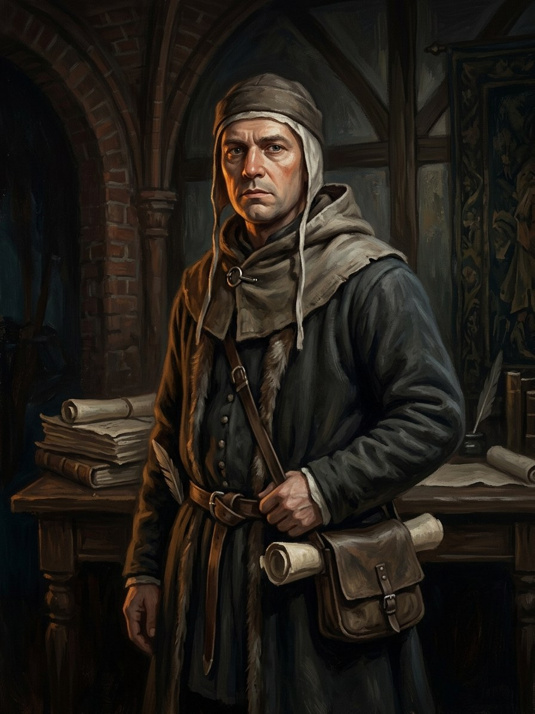 |
Danila (Vytautas’s scribe) | Scribe and personal servant to Vytautas in Vilnius and Trakai (Book IV ch. 1, 16, 24). | c. 1385–1435 |
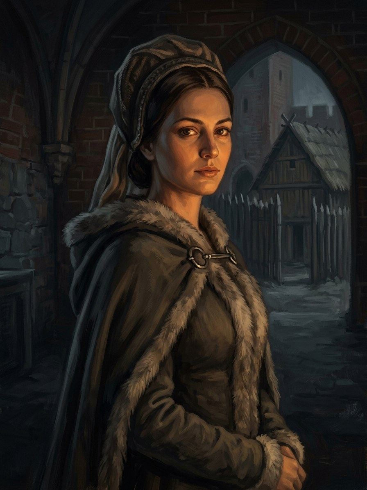 |
Danutė | Died 1424. | c. 1358–1424 |
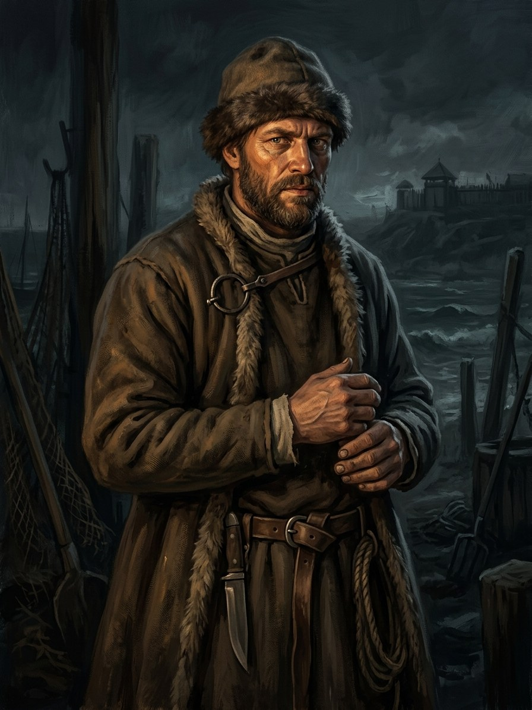 |
Dargis (Palanga fisherman) | Rimgailė’s husband; runs to the beach when the keeper collapses by the burning statue and carries him in (Book V ch. 29). | ?–? |
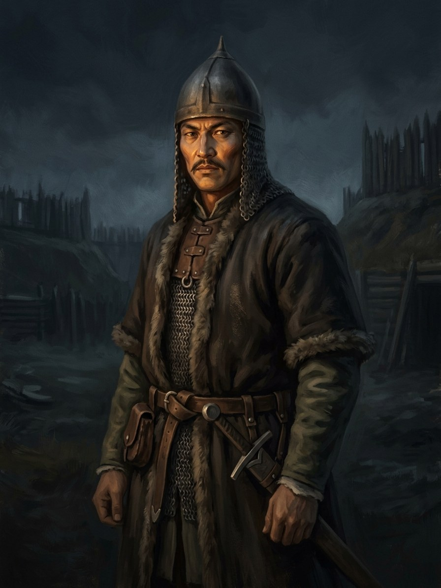 |
Edigu | Emir of the Nogai Horde and military leader of the Golden Horde; victor over Vytautas at the Vorskla (1399). | c. 1352–1419 |
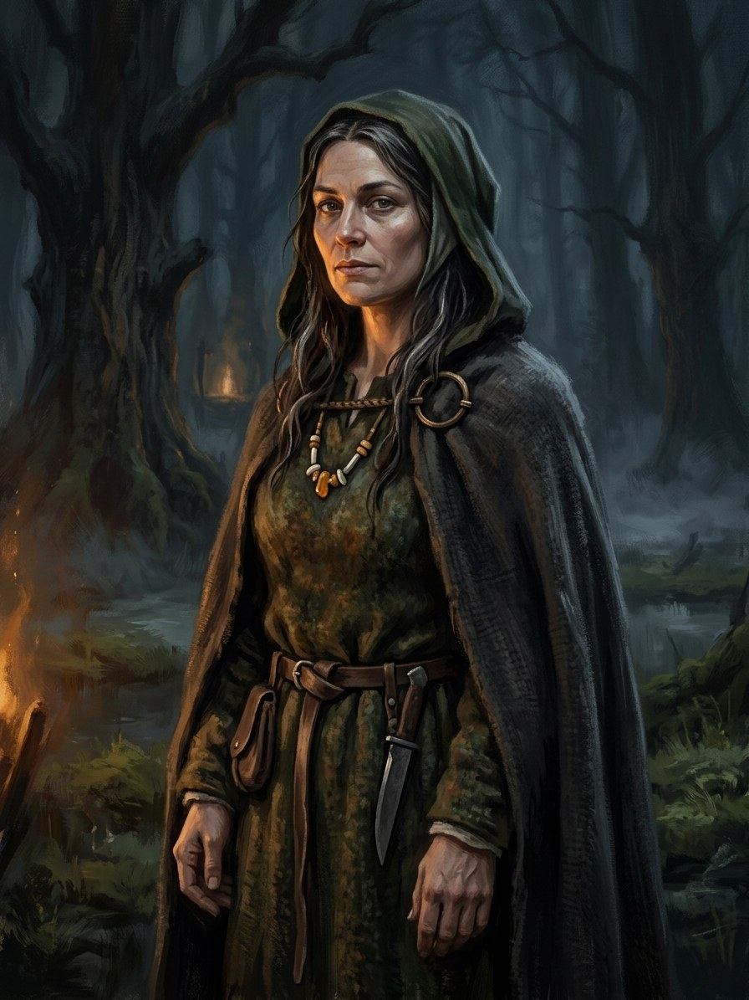 |
Eglė (vaidilutė → Pelkių Eglė) | Vaidilutė at Šventaragis grove who witnesses the putting out of the sacred flame in 1387; becomes Pelkių Eglė. | c. 1355–1420 |
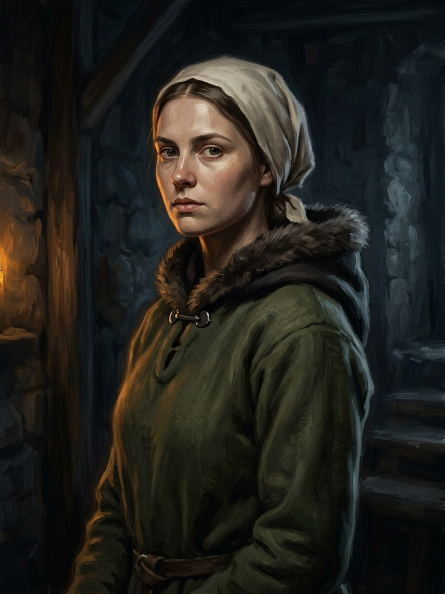 |
Elena (Ona’s maid) | Stays in Vytautas’s cell; executed. The saga’s invention for the name, faith and fate: the Lithuanian Chronicle has Ona persuade a maid to change clothes with Vytautas (Wigand: Ona’s own clothes), but the maid’s name and execution are a 19th-century addition. | c. 1360–1382 |
| Elijas, son of Mošė (Karaim guard captain) | Karaim captain of the Trakai guards; stands at the vault door. His younger son holds the door in 1430. | ?–? | |
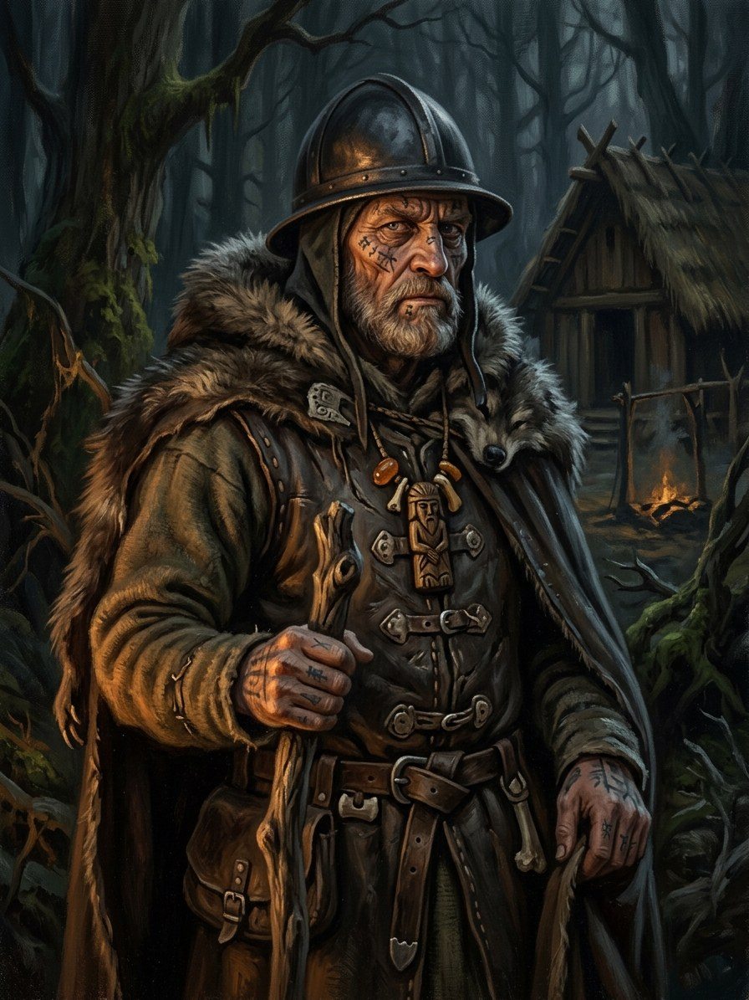 |
Galminas | Died before 1382 in a raid; reanimated by the Root-Mother. ‘died’ = becomes a grove at Grunwald. The saga’s invention (record:false): shares his name only with the historical Jurgis Galminas, Vytautas’s deputy in the 1409 rising, at Constance 1415, Samogitian elder 1432-34 (VLE; en.wikipedia Samogitian uprisings); the Book III afterword says so. | c. 1340–1410 |
| Gediminas | Grand Duke of Lithuania (1316–1341), founder of the Gediminid dynasty and builder of Vilnius; swore the Silent Pact. | c. 1275–1341 | |
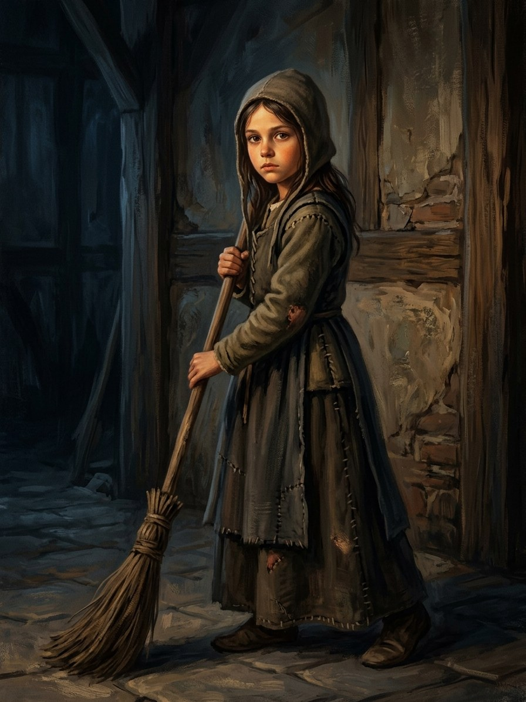 |
Gedvilė (Rimgailė’s granddaughter) | Eight in 1450, long-legged, scarred knee from climbing on boats; keeps sweeping the stone; mother of the old man (b. c. 1459) of the 1553 epilogue (Book V ch. 29-30). | c. 1442–? |
| Günther von Hohenstein (invented Order brother) | The saga’s invention. A young brother of the Order (22 in 1353) who shares a name with a real, older Osterode komtur (c. 1310-1380); the third knight at Lake Ublik, translator and meal-bearer at Marienburg 1361, at Kaunas 1362 (Book VI). NOT the 1381 informant: that was Kuno von Liebenstein. | c. 1331–? | |
| Hanulas (Riga merchant) | Riga merchant who led the townspeople in taking Vilnius castle for Jogaila on 12 Jun 1382; Jogaila’s deputy (first elder) in Vilnius 1382-87; died in Kraków c. 1417-18 (en.wikipedia, VLE). Saga: Henė’s first mask (1380-82). | c. 1340–1418 | |
| Jadvyga (Jadwiga) | Queen of Poland (1384–1399); married Jogaila in 1386, uniting Poland and Lithuania; venerated as a saint. | 1373–1399 | |
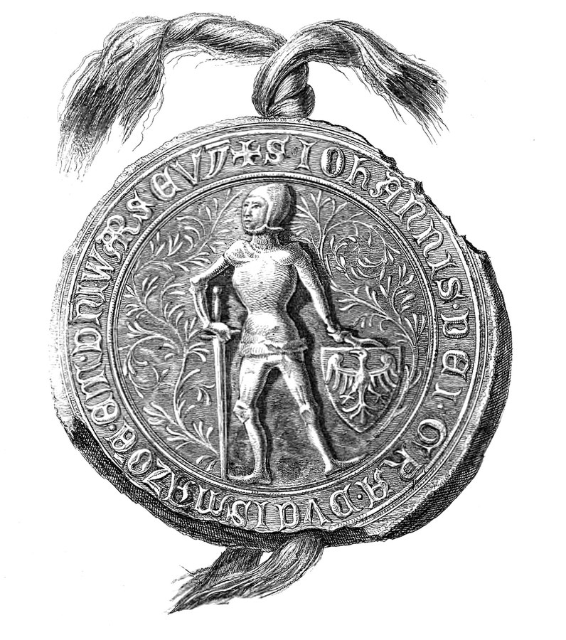 |
Janusz I of Masovia | Duke of Warsaw and Czersk; husband of Danutė Kęstutaitė and loyal brother-in-law to Vytautas. | c. 1346–1429 |
| Jogaila | Grand Duke of Lithuania (1377–1434) and King of Poland (Władysław II Jagiełło from 1386); architect of the Kreva Union. | c. 1362–1434 | |
| Jonas (vilkų vyresnysis) | Elder of the Iron Wolves who re-assembles the pack after the 1382 purge at Trakai. | c. 1330–1384 | |
| Jonas Goštautas | Voivode of Trakai, then Vilnius voivode and chancellor; conspirator of the 1432 coup; coordinated the election of Casimir (1440). VLE calls his part in the 1440 murder uncertain. | ?–1458 | |
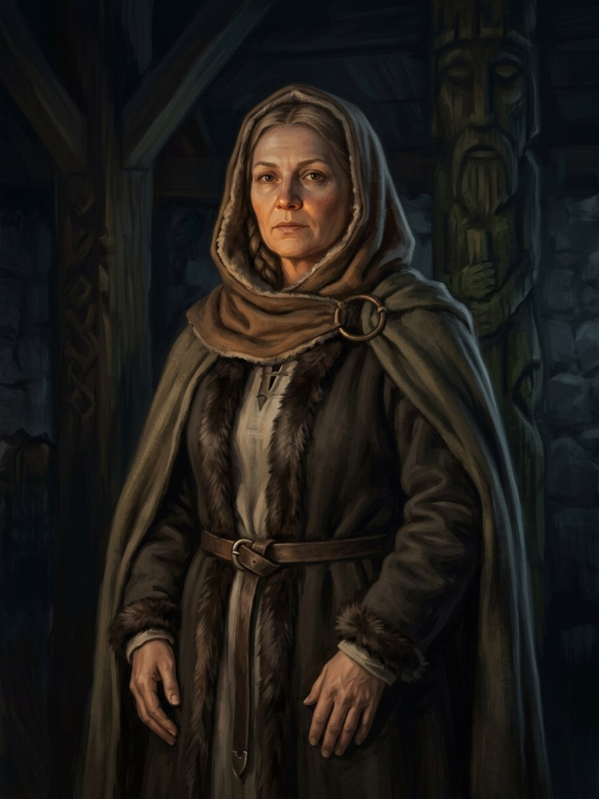 |
Julijona Alšėniškė | Grand Duchess of Lithuania; Vytautas’s second wife (from 1418), daughter of Ivan Olshanski. | c. ?–1448 |
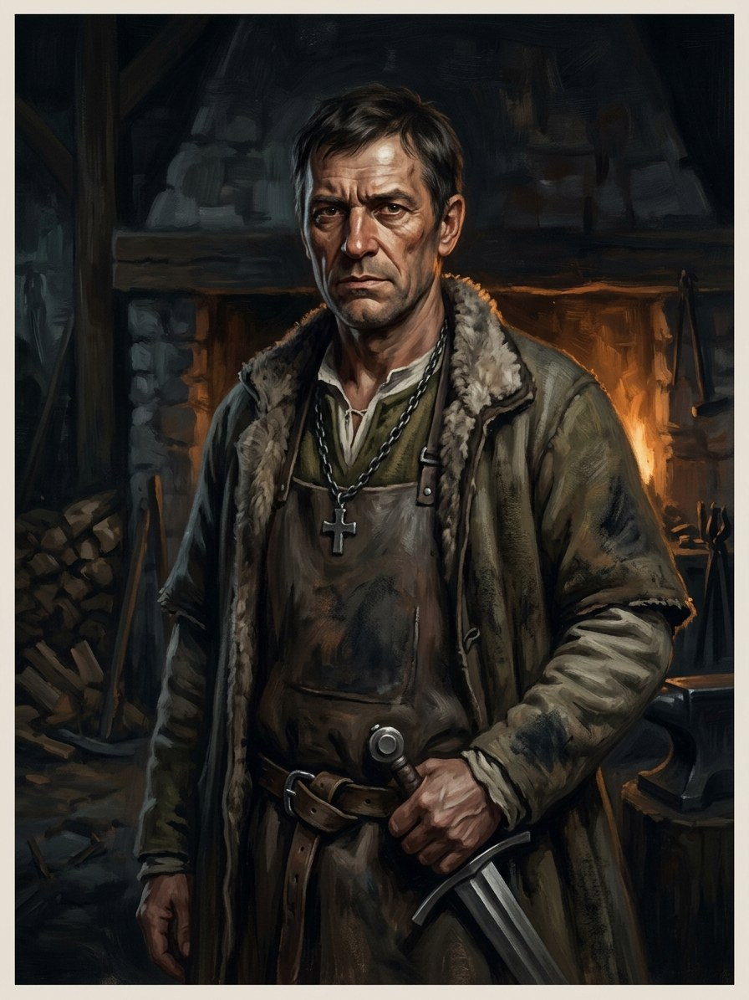 |
Kalvis (the Smith) | Leader of the Vilnius packs; guards the 1387 flame; dies at the Vorskla (1399). His ash feeds the flame afterwards. | c. ?–1399 |
| Kaributas | Duke of Novgorod-Seversky, son of Algirdas; brother to Jogaila and Skirgaila. | c. 1355–1404 | |
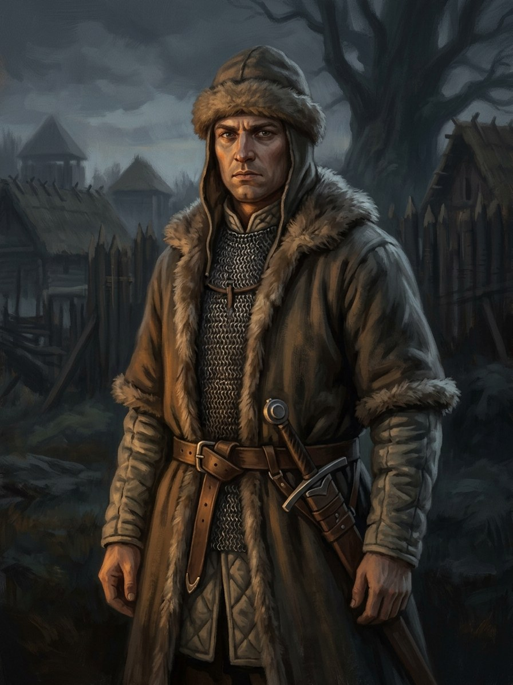 |
Karigaila (Jogaila’s brother) | Died when the Crooked Castle fell, 16 Sep 1390; his head was carried on a stake round the Lower Castle. Not Kaributas (Dmitry Korybut). | ?–1390 |
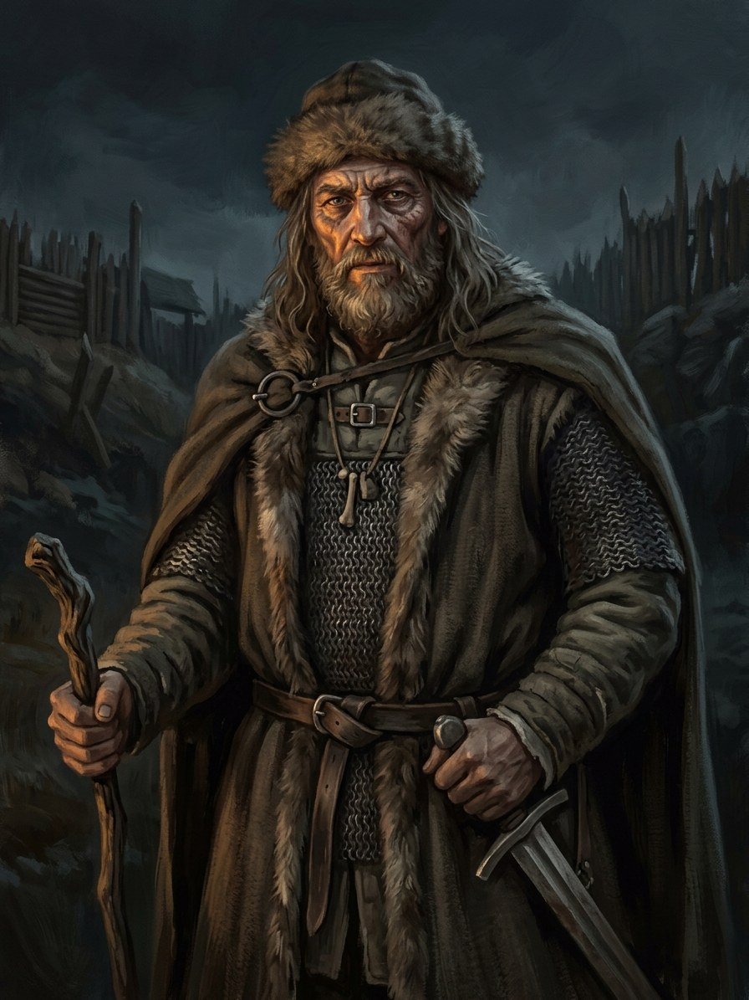 |
Kirmėlė / Worm (the Old Tracker) | Elder wolf of the Iron Wolves; carried five-year-old Spark from the burning village of Šermukšniai in winter 1395-96 (Book II ch. 14); dies at Pabaiskas in 1435, whispering his carried names to Pilkoji (Book V ch. 13). | c. 1360–1435 |
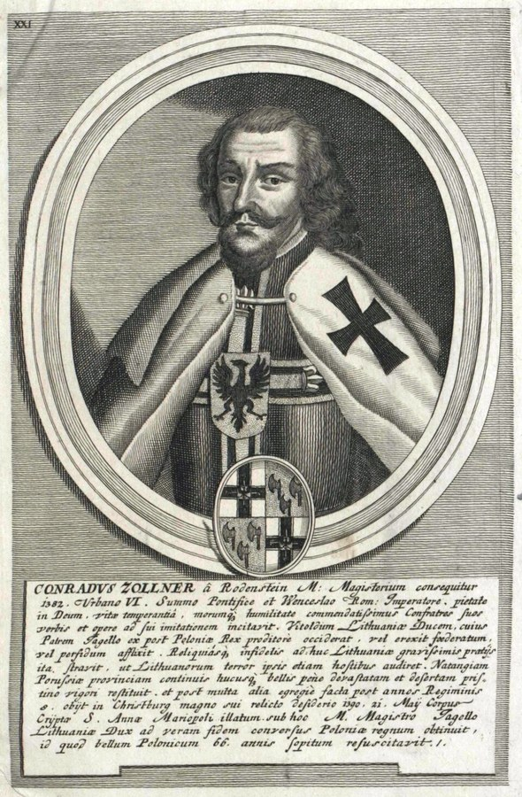 |
Konrad Zöllner von Rotenstein | Grand Master of the Teutonic Order (1382–1390); oversaw the aftermath of Dovydiškės and the Krėva crisis. | c. 1325–1390 |
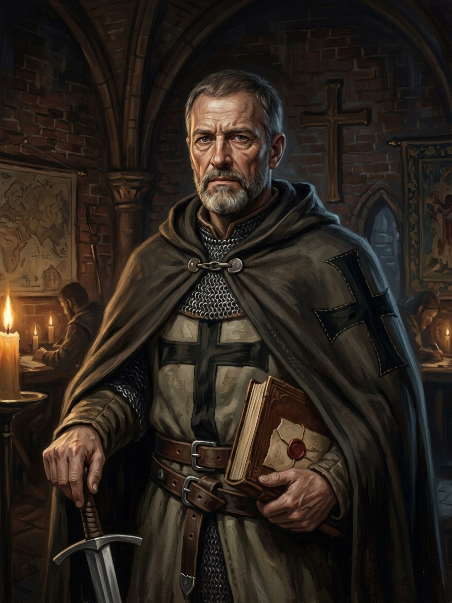 |
Konrad von Jungingen (Grand Master 1393-1407) | Grand Master 30 Nov 1393 - 30 Mar 1407; elder brother of Ulrich (the saga’s Book II epilogue shows the two at the Marienburg map after Salynas). | c. 1355–1407 |
| Krivis of Šventaragis | Chief pagan priest of Lithuania at the sacred grove of Šventaragis; keeper of the eternal flame. | c. 1310–1387 | |
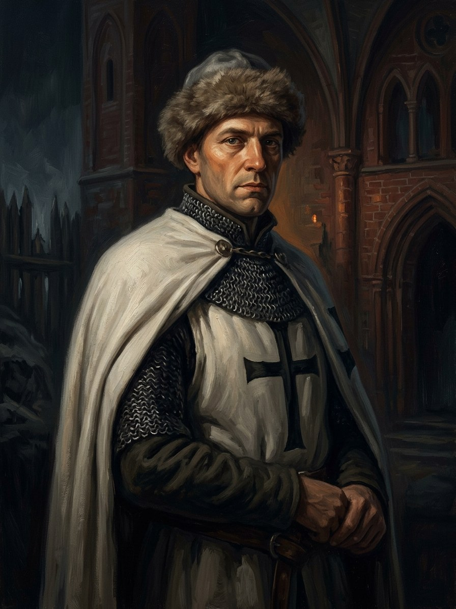 |
Kuno von Liebenstein | Komtur of Osterode, godfather of Danutė; the Order’s informant who warned Kęstutis of the Dovydiškės treaty in Aug 1381 (Ivinskis 1978, via en.wikipedia; VLE names no informant). Dates unknown. | ?–? |
| Kęstutis | Grand Duke of Lithuania and Duke of Trakai (1345–1382); defender of the pagan west, strangled at Krėva. | c. 1297–1382 | |
| Marquard von Salzbach | Komtur of Ragnit; Vytautas’s captive (1384) and adviser (1389), then enemy. Signs Lyck 1390, helps negotiate Salynas 1398, fights at the Vorskla 1399 (Posilge: nine of the Order killed, he is rescued), insults Birutė after Raciąż 1404, beheaded by Vytautas after Grunwald (komtur of Brandenburg). Birth year unknown. | ?–1410 | |
| Mykolas Žygimantaitis | Žygimantas Kęstutaitis’s son; commander of the Lithuanians at Pabaiskas (1435); pretender against Casimir after 1440; died in Moscow shortly before 10 Feb 1452. Birth year unknown. | c. ?–1452 | |
| Ona | Grand Duchess of Lithuania (d. 1418); Vytautas’s first wife and steadfast political partner who orchestrated his escape from Krėva. | c. 1352–1418 | |
| Pilkoji (the Grey One, Vilkų Motina) | Last Mother of the wolves; born c. 1365 (38 in 1404, Book III ch. 7; 84 in 1449, Book V ch. 28). Carries Eglė’s four names (Eglė’s own, her father’s, her mother’s, and the pine she sat under as a child: Book V ch. 1); keeps the silver wolf and the pebble from Vytautas’s body until Kūčios 1430; lies down in the oldest bog of the Dykra with the Iron Wolf’s skull (Vėlinės, 2 Nov 1449, Book V ch. 28). | c. 1365–1449 | |
| Pušis (old Kęstutis wolf) | Grey old wolf who served Kęstutis; at Kirmėlė’s exposure in the Trakai vault he says ‘we leave him to the bog, alive’ (Book II ch. 11); stands in the Kūčios line of 1405 (Book III ch. 9). | ?–? | |
| Rimgailė (Palanga fisherwoman) | About sixty in 1450; receives the silver wolf from the Flame-Keeper (Book V ch. 29-30). Not Kęstutis’s daughter Rimgailė. Husband Dargis; granddaughter Gedvilė. | c. 1390–? | |
| Samuelis (Elijas’s elder son, Karaim) | Leads the family’s prayers; Zacharijas’s older, wiser brother (Book V ch. 4). | ?–? | |
| Sigismund of Luxembourg | King of Hungary, Croatia, Germany and Bohemia, Holy Roman Emperor; allied with Vytautas and sender of the crown. | 1368–1437 | |
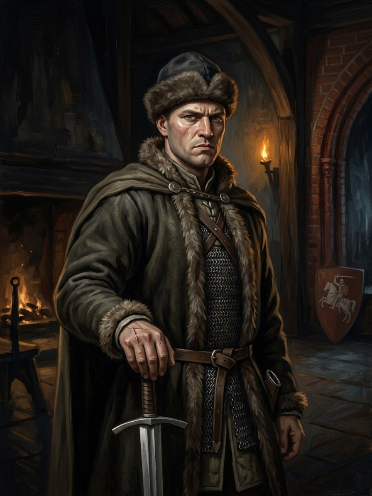 |
Skirgaila | Duke of Trakai and Kyiv, regent of Lithuania; Jogaila’s fierce right hand and governor in Vilnius. | c. 1354–1397 |
| Sofija Vytautaitė | Grand Princess of Moscow; only child of Vytautas and Ona, regent of Moscow for Vasily II. | c. 1371–1453 | |
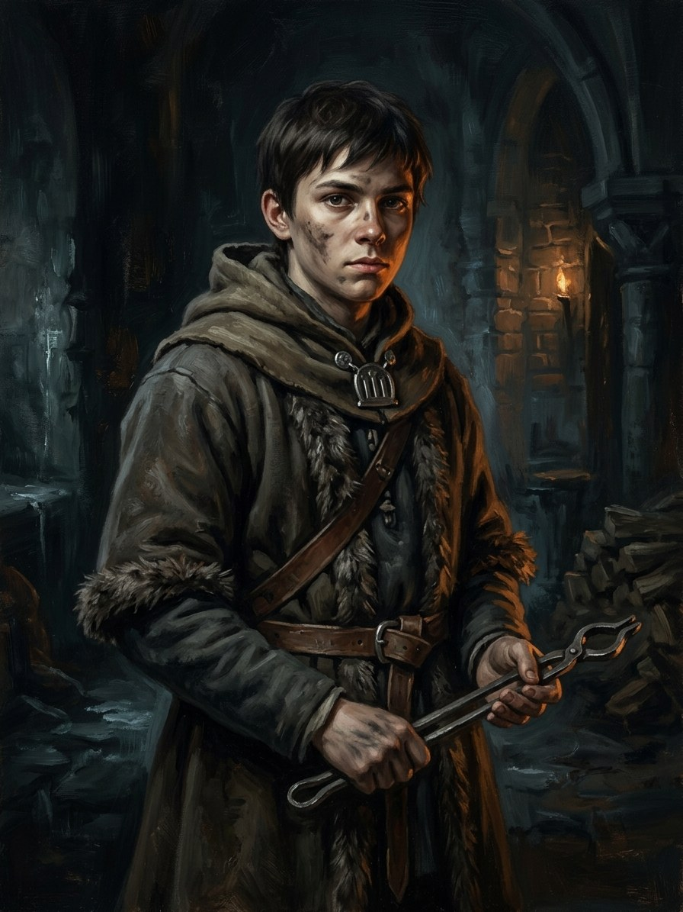 |
Spyglys (young ash-bearer) | Wolf; tends the Trakai vault flame after Kalvis; stays behind when the lantern leaves in 1410. | ?–? |
| Tautvilas Kęstutaitis (Kondrat) | Kęstutis’s son; baptised Kondrat 21 Oct 1383; fought with the Order and was killed besieging the Crooked Castle, “believed by a crossbow bolt” (Wigand). Birth year unknown. | ?–1390 | |
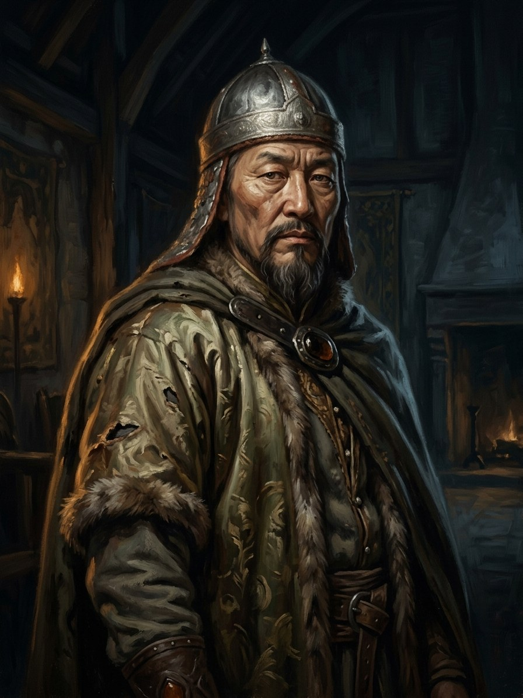 |
Tokhtamysh | Khan of the Golden Horde; allied with Vytautas after losing his throne to Timur. | c. 1342–1406 |
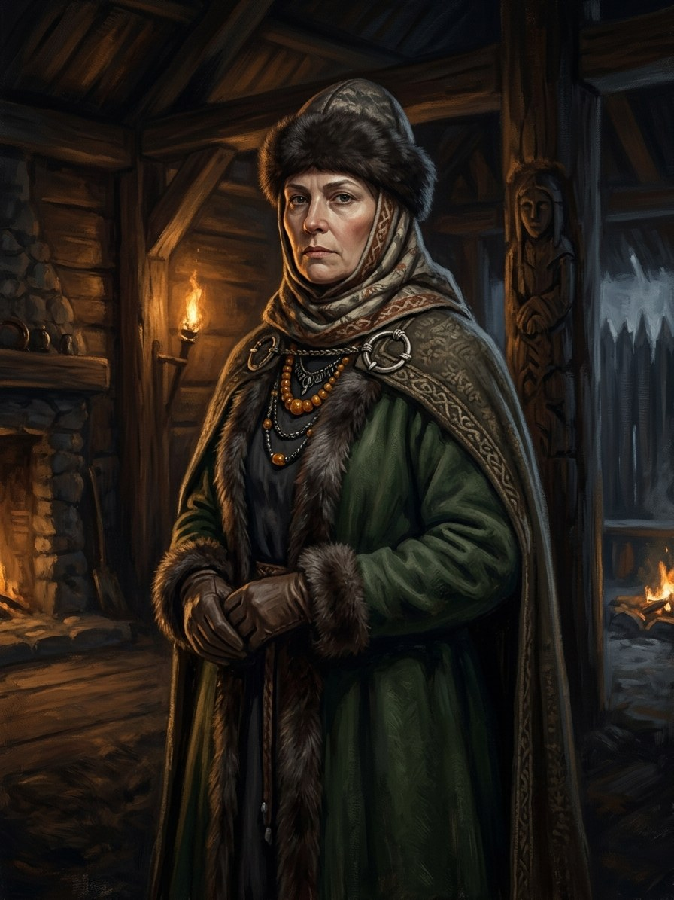 |
Uliana of Tver (Julijona Tverietė), Algirdas’s second wife | Mother of Jogaila, Skirgaila, Kaributas, Švitrigaila and others; Orthodox, a dynast who steered the 1377 succession; died 17 Mar 1391 (en.wikipedia, Uliana of Tver). Not Julijona Alšėniškė (Vytautas’s wife). | c. 1325–1391 |
| Ulrich von Jungingen | Ulrich von Jungingen, Grand Master of the Teutonic Order (1407–1410); killed at the Battle of Grunwald. | 1360–1410 | |
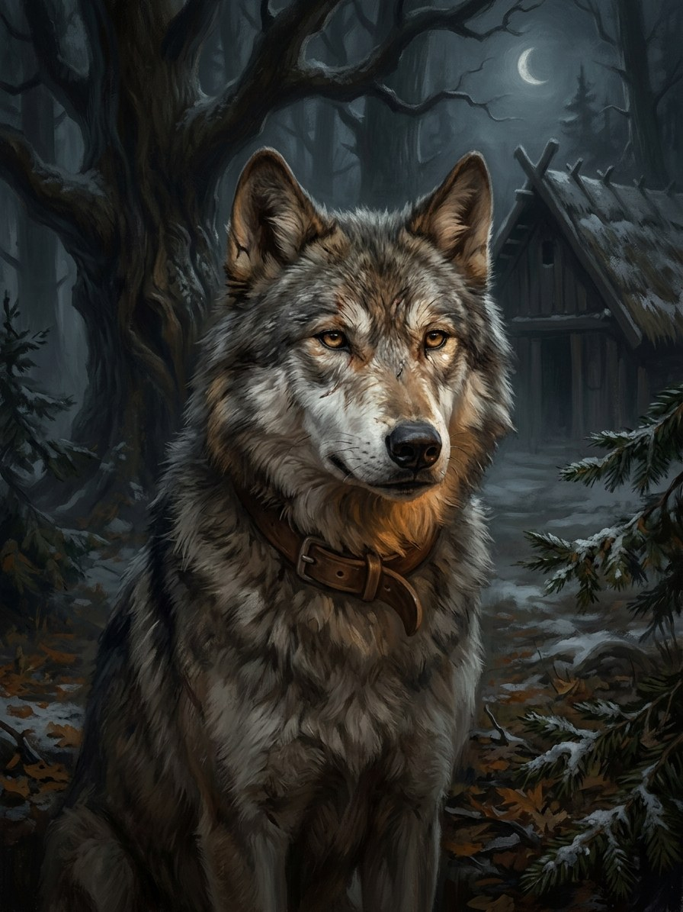 |
Uosis / Ash (elder wolf) | White-muzzled elder wolf of the Iron Wolves; accompanies Pilkoji in 1430; dies in the winter of 1448-49 (Book V ch. 28). | c. 1375–1449 |
| Vasily I of Moscow | Grand Prince of Moscow (1389–1425); son of Dmitry Donskoy and husband of Vytautas’s daughter Sophia. | 1371–1425 | |
| Vytautas | Grand Duke of Lithuania (1392–1430); protagonist of the saga, victor of Grunwald, known as Vytautas the Great. | c. 1350–1430 | |
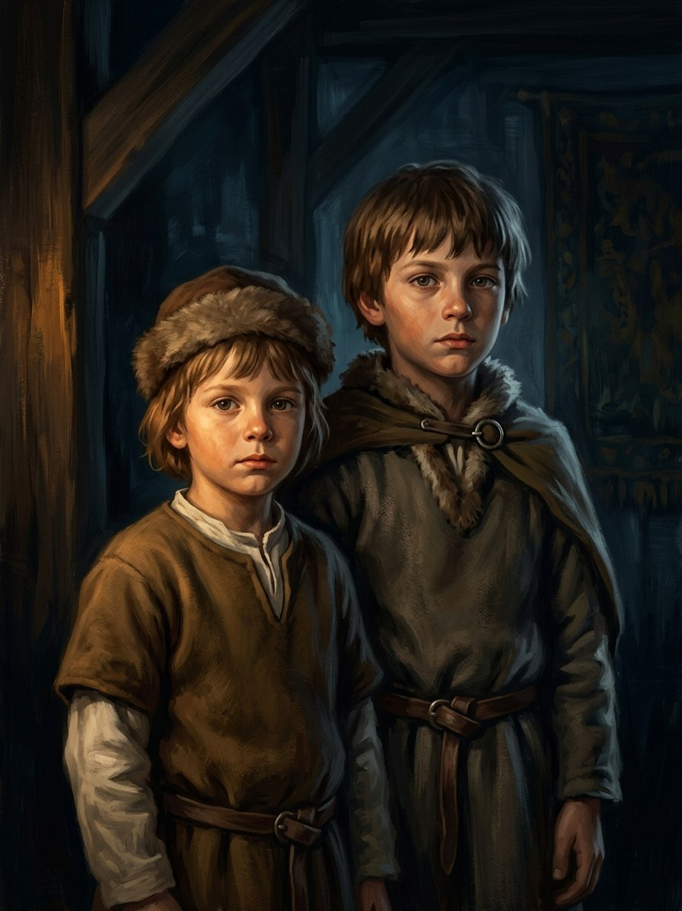 |
Vytautas’s sons Jurgis and Ivanas (hostages; contested) | Only a late tradition (Simon Grunau, 16th c.): “Iwan and Georg” poisoned by a knight to avenge the betrayal. No reliable source knows the incident; Sofija is the only child in the record. The saga adopts the tradition (Book II ch. 6-10). | c. 1375–1392 |
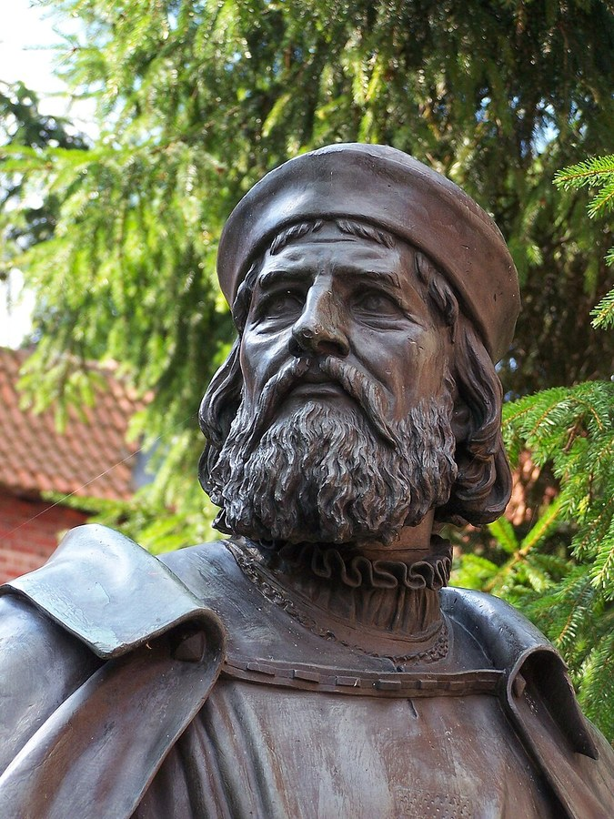 |
Winrich von Kniprode | Grand Master of the Teutonic Order (6 January 1352–24 June 1382); the older 1351 dating is superseded here by the specialist biography. | c. 1310–1382 |
| Zacharijas (Elijas’s younger son, Karaim) | Holds the Trakai vault door in 1430 and tends the old brass lantern after the flame goes out (Book V ch. 4); wife Sara. | ?–? | |
| Zbigniew Oleśnicki | Born 5 Dec 1389; royal secretary to Jogaila from about age 20 (c. 1409-10); fought at Grunwald (15 Jul 1410); bishop of Kraków from 9 Jul 1423 (so no bishop’s ring in 1411); cardinal created 18 Dec 1439 by Eugene IV (the antipope Felix V also named him, 20 Jan 1440); died 1 Apr 1455 at Sandomierz (en.wikipedia). | 1389–1455 | |
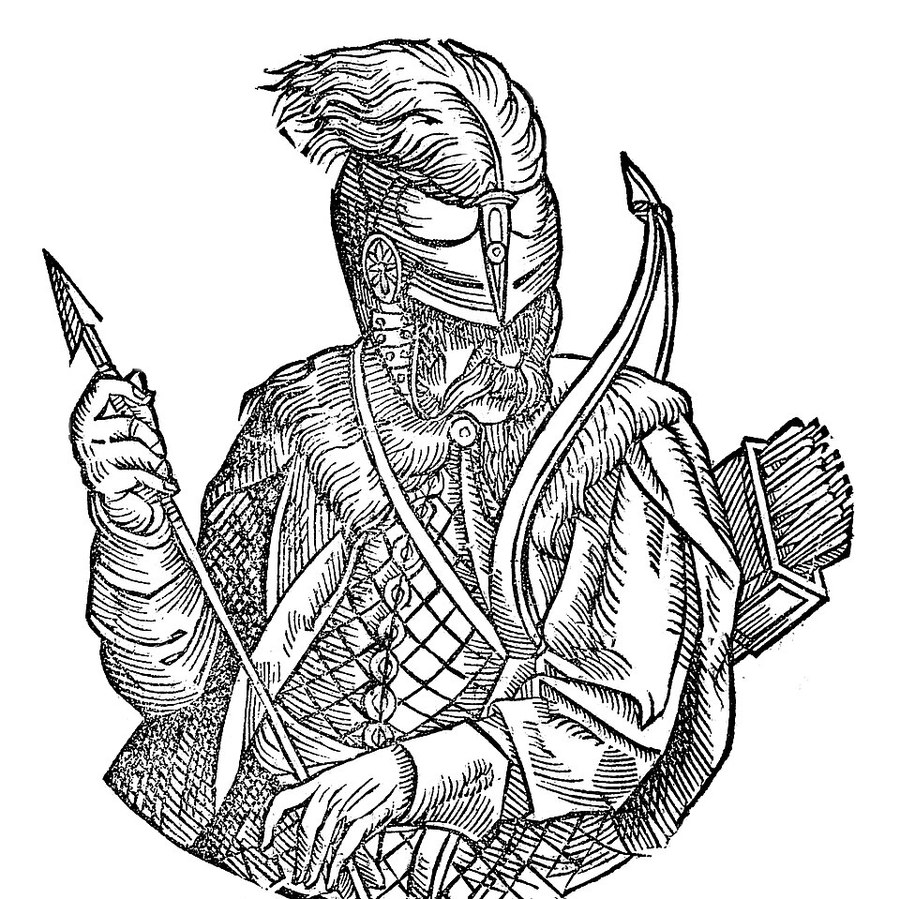 |
Švitrigaila | Grand Duke of Lithuania (1430–1432), youngest son of Algirdas; rival to Žygimantas in the brutal civil war. | c. 1370–1452 |
| Žiežirba (the Flame-Keeper, Book V POV) | Working skin-name Žiežirba. Born c. Oct 1390-Mar 1391: about 5 in winter 1395-96 (Book II ch. 14), 8-9 in 1399, 14 and nearly 15 at Kūčios 1405 (Book III ch. 9), 48 in 1438. Tends the vault flame as a boy from 1399 (Kalvis’s ash, Book II ch. 29) and is sworn into the wolves at Kūčios 1405: the one wolf named below the usual age of 16. Arrives at Palanga on 12 Dec 1449 (the longest night, by the drifted calendar) and is named that night; dies in early March 1450; cremated on the beach (Book V ch. 29). | c. 1390–1450 | |
| Žygimantas Kęstutaitis | Grand Duke of Lithuania (1432–1440), brother to Vytautas; survivor of Order captivity, assassinated at Trakai. | c. 1365–1440 |